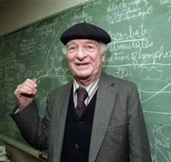

LINUS PAULING

Introduction
The quantum mechanics developed in the 1920s was quickly applied to problems of chemical bonding and structure, which were the focus of much of the prolific research of Linus Carl Pauling (1901–1994) and earned him the Nobel Prize in chemistry in 1954.
About Pauling
Born in Portland, Oregon, Pauling received his bachelor’s degree from Oregon State University and his Ph.D. in chemistry from the California Institute of Technology—despite the economic difficulties experienced by his family. After a European sojourn investigating the implications of the new quantum mechanics for chemistry, mainly in Munich with the theoretical physicist Arnold Sommerfeld, he joined the faculty at Caltech, where he remained until 1963. Then after a short stay at the Center for the Study of Democratic Institutions in Santa Barbara, California, he resumed his laboratory research at the University of California at San Diego, from which he moved on to Stanford University, and finally to the Linus Pauling Institute of Science and Medicine in Palo Alto.
Pauling's work
Among his accomplishments, he determined crystal structures by X-ray crystallography and the structures of gas molecules by electron diffraction. He studied the magnetic properties of substances, including hemoglobin, which helped him ascertain the molecular cause of sickle-cell anemia. He developed an electronegativity scale to assign to atoms involved in covalent and ionic bonding, and he formulated the concept of “resonance” to talk about the state of a chemical system where none of the classical structural formulas is entirely consistent with observed properties. He extended the theory of covalent bonds to include metals and intermetallic compounds. He proposed helical structures for proteins based on the coplanarity of the atoms in the peptide bond. But Pauling is perhaps best known to the public for championing the use of vitamin C to maintain and restore health.
In the 1950s and afterward he campaigned tirelessly—and in the face of significant professional and governmental opposition—to put an end to nuclear bomb tests in the atmosphere and to the arms race. In 1963, the year that the Nuclear Test Ban Treaty went into effect, Pauling was given the Nobel Peace Prize, the second person after Marie Curie to win a second Nobel Prize.
References
http://www.chemheritage.org/discover/online-resources/chemistry-in-history/themes/molecular-synthesis-structure-and-bonding/pauling.aspx